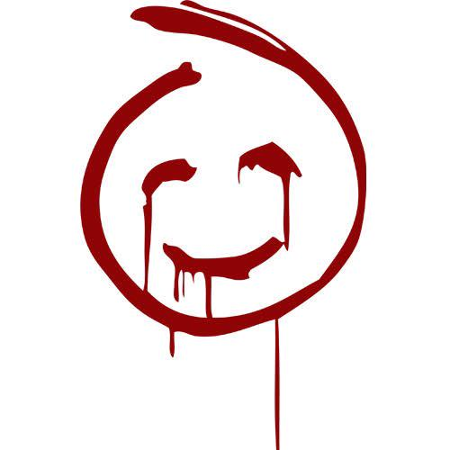

"Tyger, Tyger, burning bright,
In the forests of the night;
What immortal hand or eye,
Could frame thy fearful symmetry?"

Brett Partridge
Jefe Técnico Forense CBI
Durante seis temporadas, una presencia invisible atormentó a Patrick Jane. No era un simple criminal; era un titiritero carismático infiltrado en las altas esferas de la ley.
"Tyger, Tyger, burning bright,
In the forests of the night;
What immortal hand or eye,
Could frame thy fearful symmetry?"
Fundada y dirigida en las sombras por el mismísimo Red John, constituyó una vasta conspiración criminal secreta enraizada en las instituciones judiciales y policiales de California. Sus miembros operaban bajo la contraseña poética "Tyger, Tyger" y portaban un tatuaje identificador de tres puntos en el hombro izquierdo.
Patrick Jane redujo la lista definitiva a siete hombres tras descartar miles de personas de su pasado. Red John predijo exactamente los mismos nombres. Examina las evidencias, filtra por conspiraciones e interactúa con los hilos de sangre.
De miles de apretones a solo 7 nombres
Tatuaje de 3 puntos y consigna Tyger Tyger
Falsificación forense post-explosión de Malibú
Ritual horario pintado con la mano derecha
Jefe Técnico Forense CBI

Agente Homeland Security

Ex-Agente CBI / Detective

Líder Supremo de Visualize


Agente Especial del FBI

Director del CBI